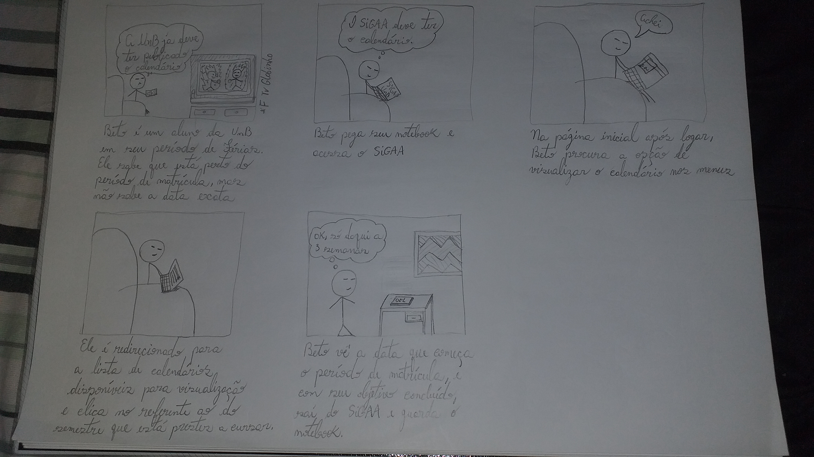
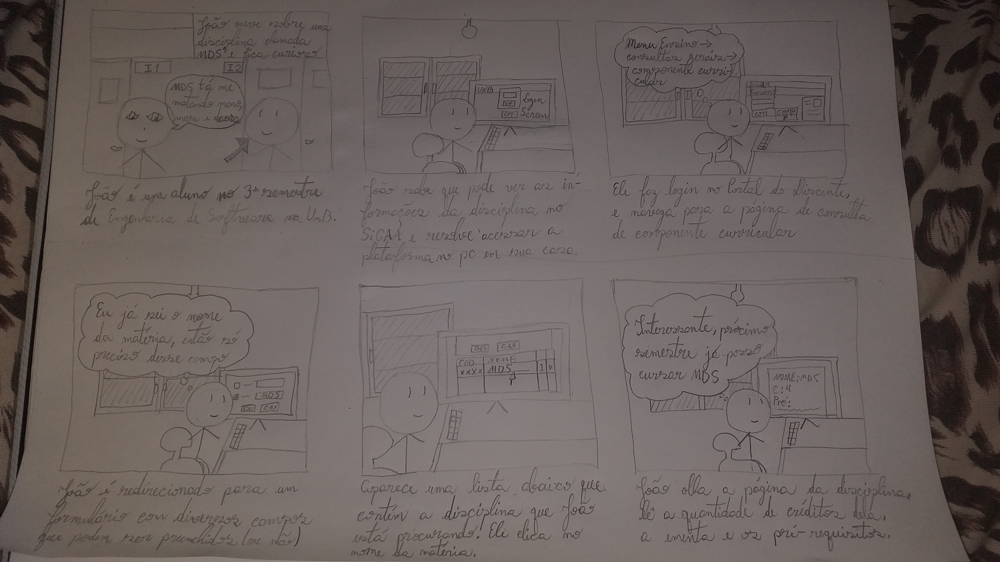
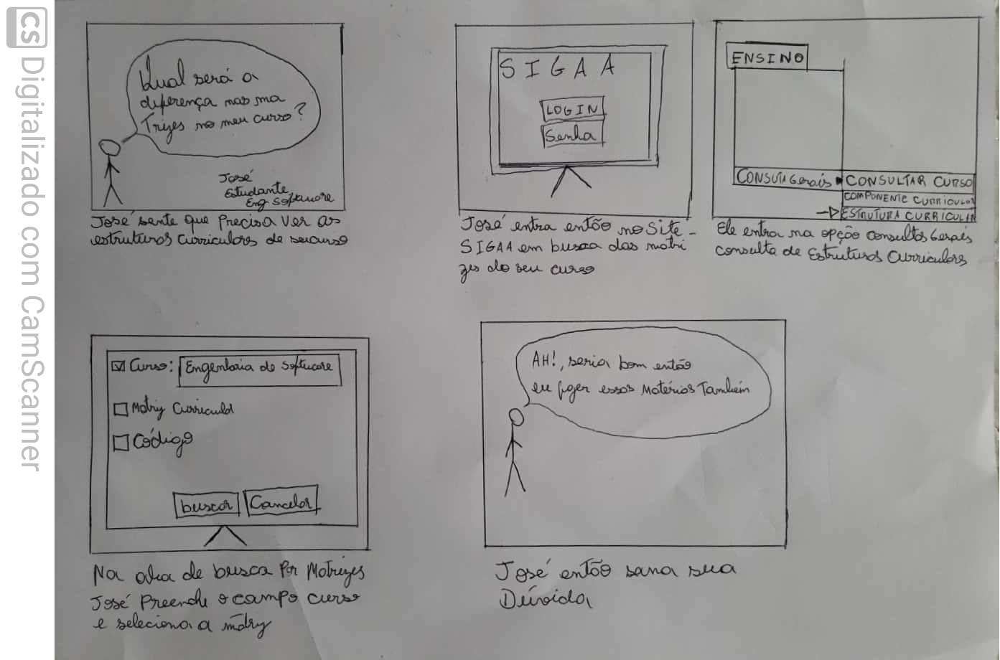
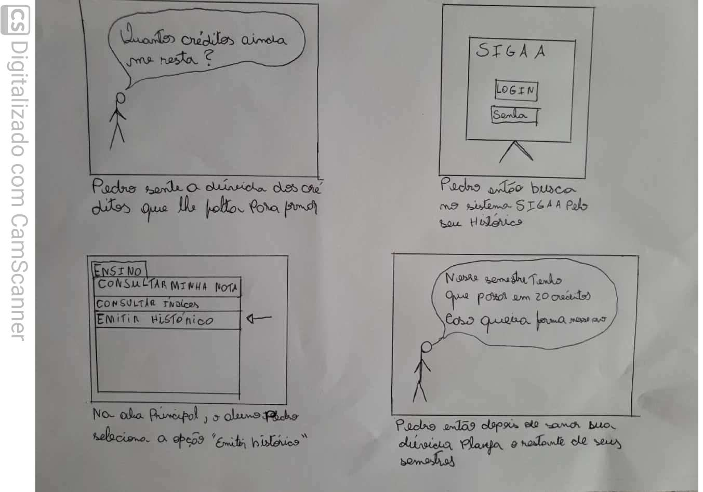

Storyboard
O que é
Storyboard é uma técnica de prototipação de baixa-fidelidade, focado nas tarefas que serão realizadas pelo usuário. Esse enfoque deve ser a primeira prioridade na construção da interface do sistema, uma vez que sistemas interativos são feitos para auxiliar nas tarefas dos usuários.
Por ser uma forma de prototipação de baixa-fidelidade, é necessário menor custo e tempo para sua criação, além de ser de fácil modificação, dessa forma contribuindo para uma melhor análise das ideias propostas para o sistema interativo.
Vale ressaltar que o mais importante em um storyboard é o entendimento das tarefas realizadas, e não a qualidade do desenho em si.
É recomendado que um storyboard conte com os seguintes elementos:
- Pessoas envolvidas
- Ambiente
- Tarefa a ser desempenhada
- Passos necessários
- O que levou a pessoa a usar a aplicação
- Qual tarefa está sendo ilustrada
- O que motiva as pessoas a usar o sistema?
- Quais tarefas o sistema auxilia as pessoas a completar?
- Qual necessidade o sistema resolve?
Os Storyboards contidos neste documento são baseados nas tarefas das Análises de tarefas. Em alguns casos, as tarefas no storyboard estão com pequenas modificações baseadas em melhorias pensadas pelos autores.
Storyboard 1 - Visualizar Calendário Acadêmico

Autor: Wagner
Storyboard 2 - Visualizar Componente Curricular

Autor: Wagner
Storyboard 3 - Visualizar Estrutura Curricular

Autor: Murilo
Storyboard 4 - Visualizar Histórico

Autor: Murilo
Histórico de Revisões
| Autor | Versão | Data(dd/mm/aaa) | Descrição |
|---|---|---|---|
| Wagner Martins | 1.0 | 26/10/2020 | Adição de informações sobre o que é storyboard |
| Wagner Martins | 1.1 | 26/10/2020 | Adição dos storyboards |
Referências
- Storyboards, Paper Prototypes and Mockups - Scott Klemmer / Univ. Califórnia em Berkeley (Coursera) https://www.youtube.com/watch?v=h2H3oIQtddU
- PREECE, Jenny; ROGERS, Yvonne; SHARP, Helen; Design de Interação. 2005